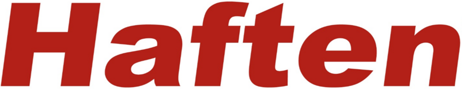
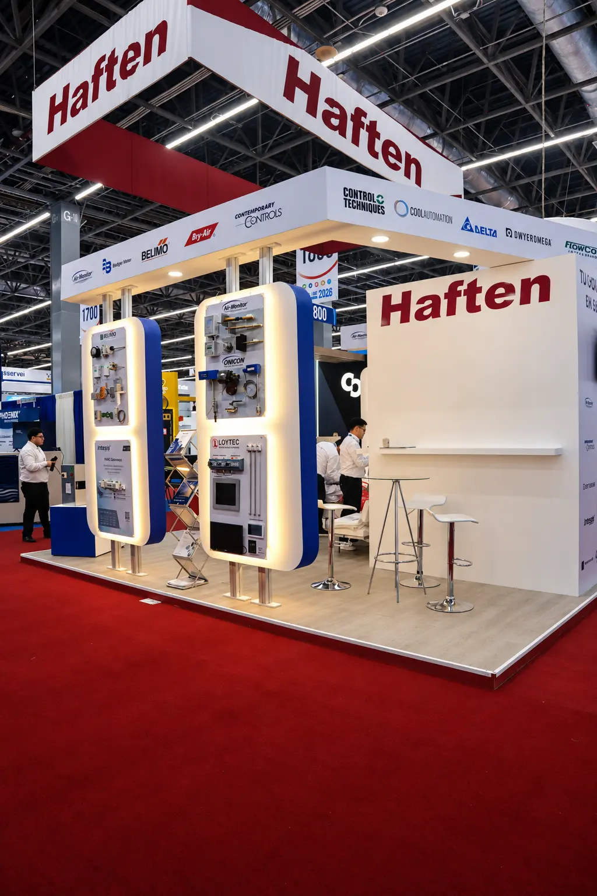
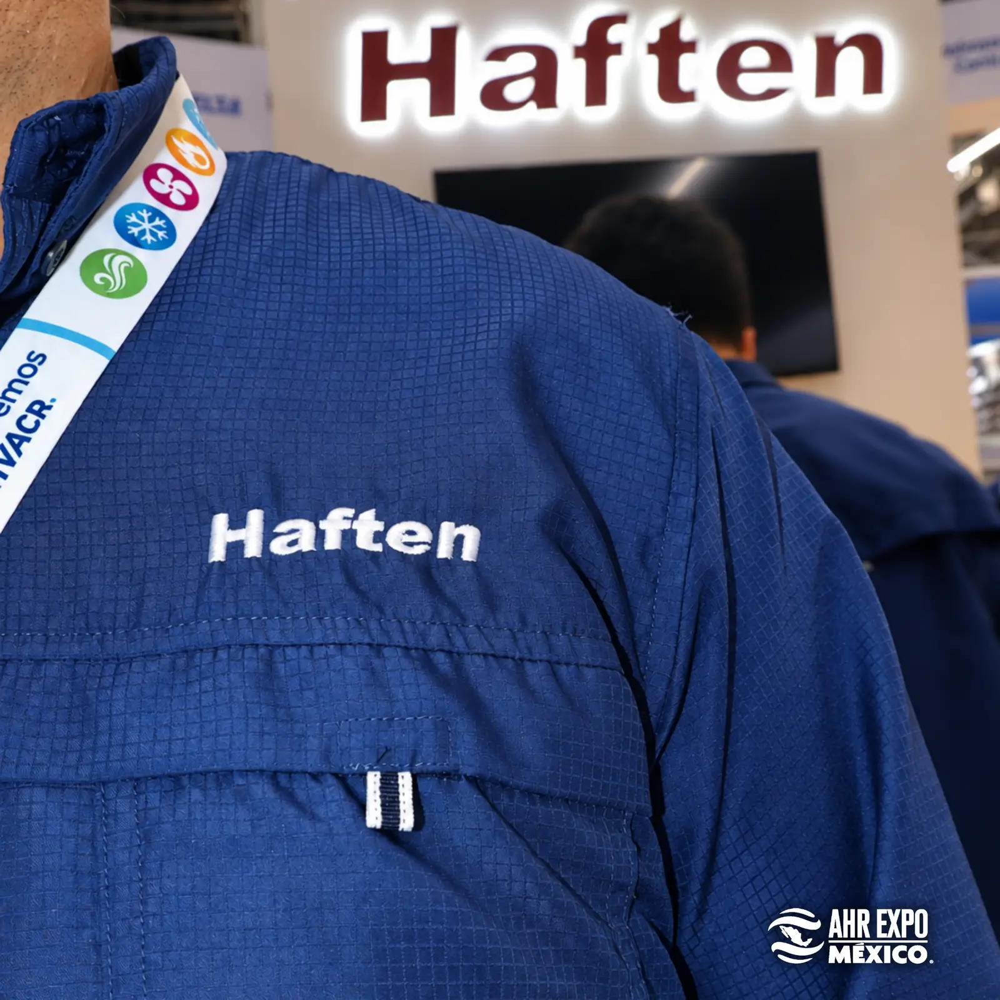
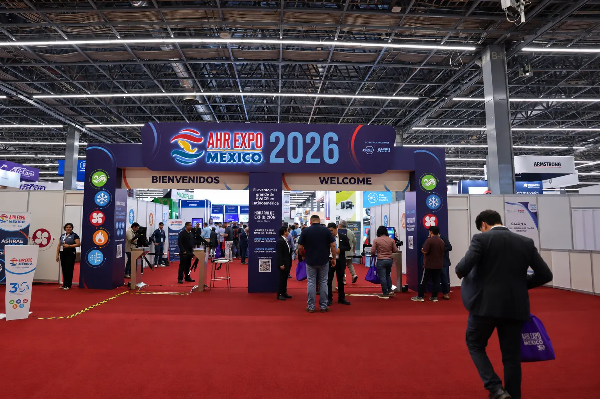
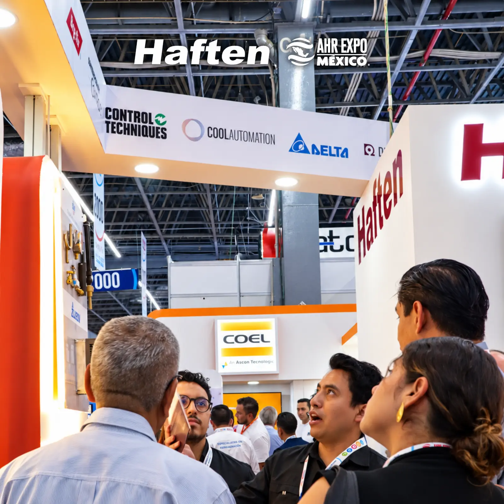
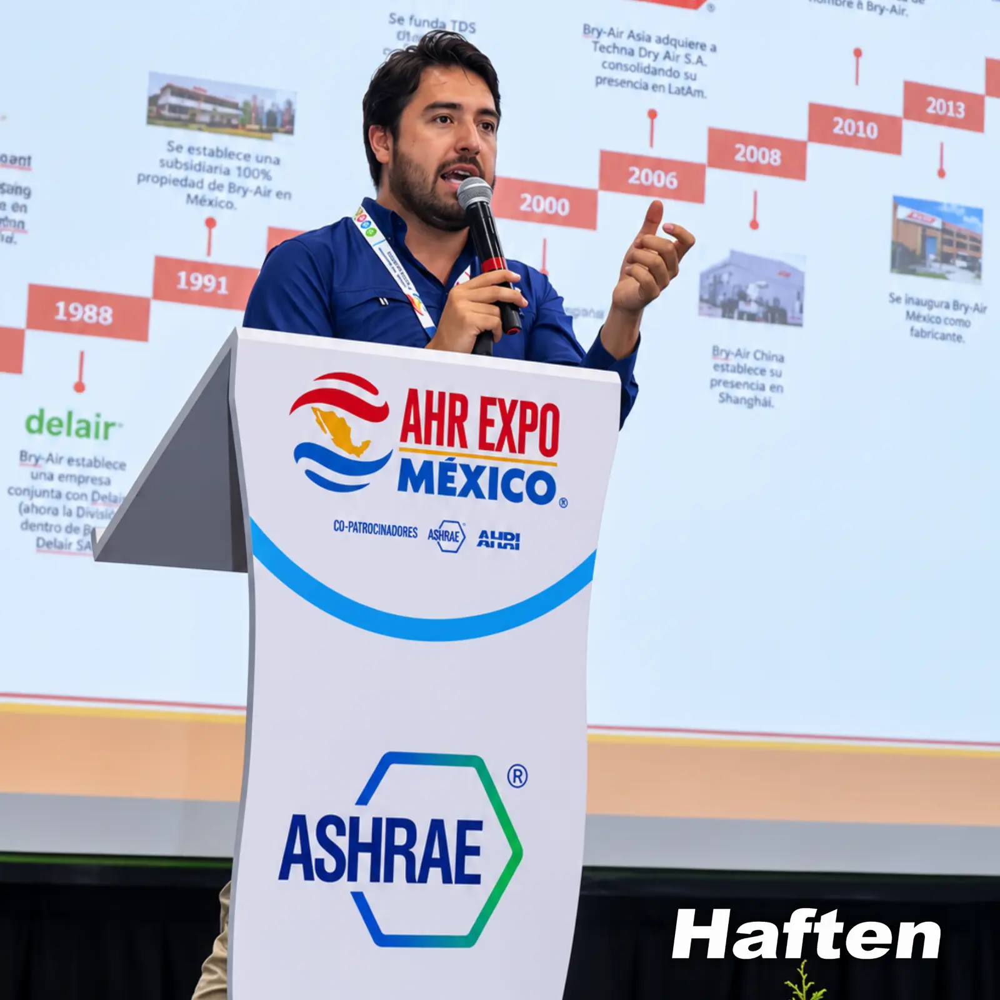
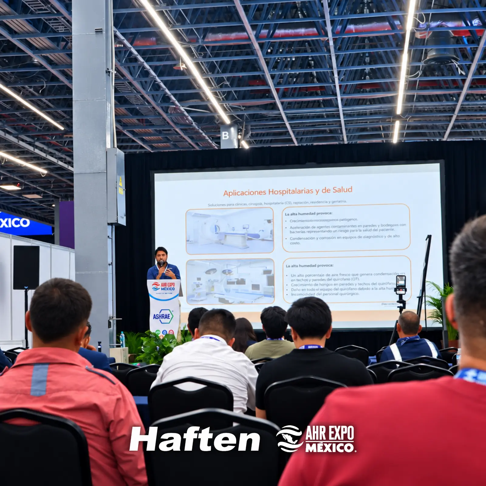
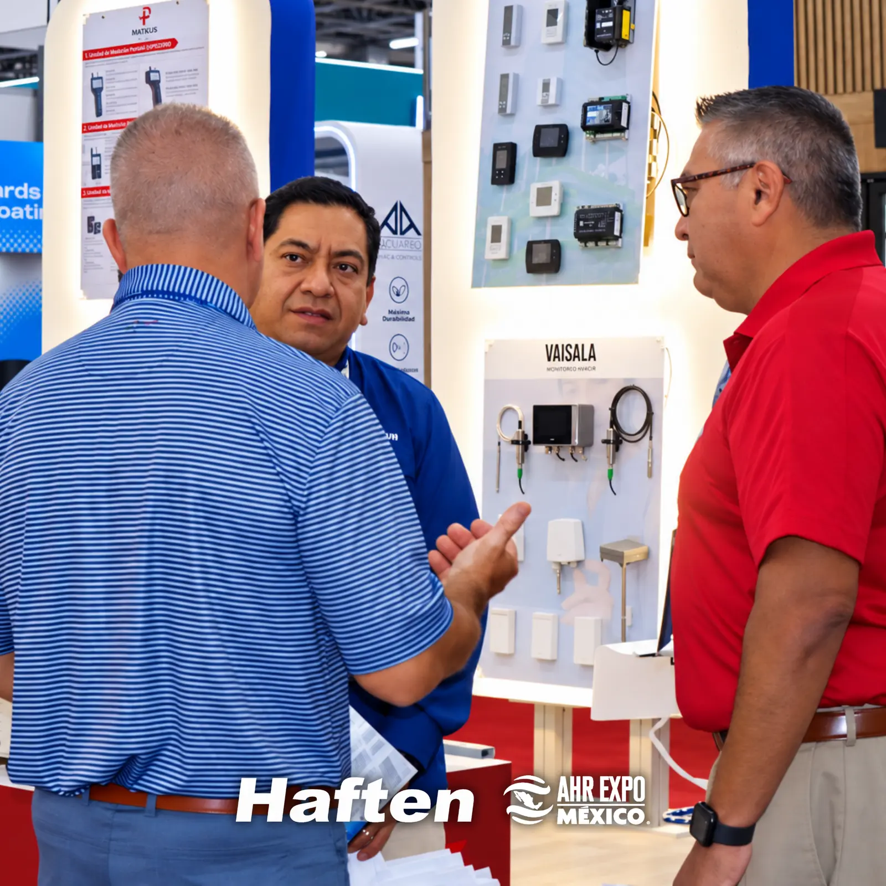
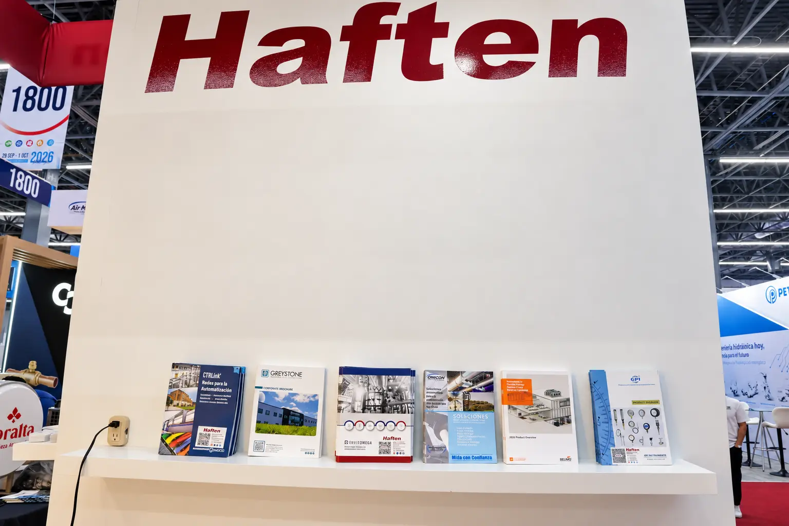
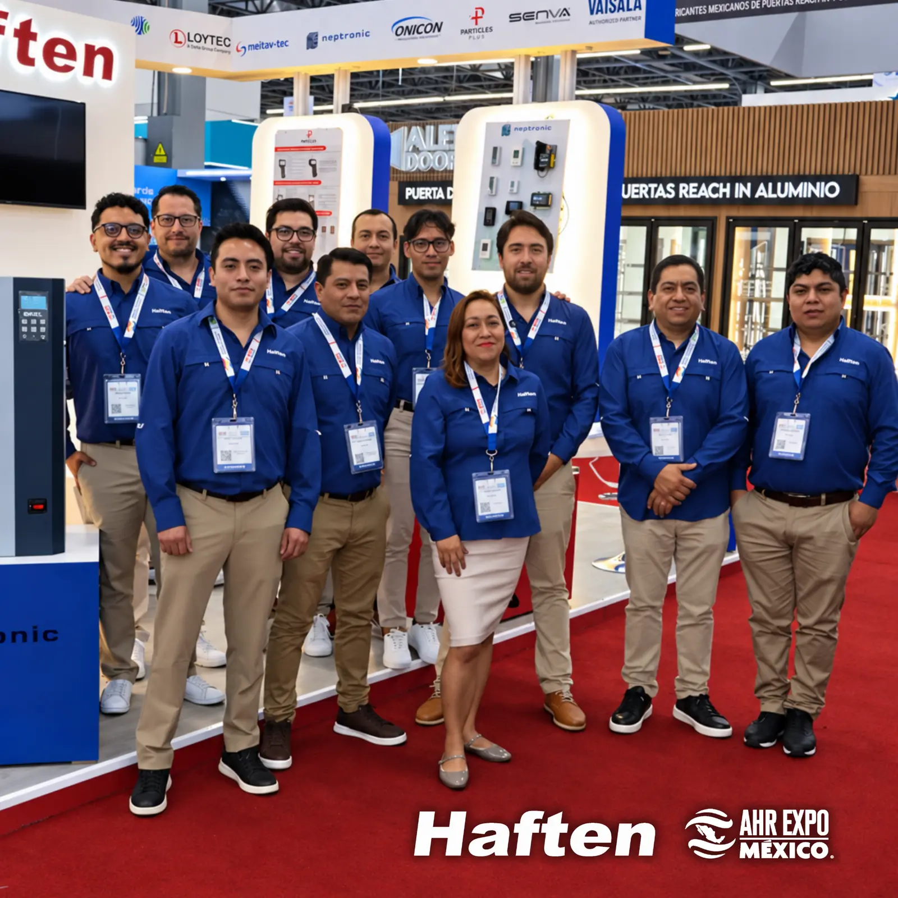

Alcance ×8.7
33,154 visualizaciones, +769% vs. el periodo anterior. La expo fue el mayor impulso de visibilidad del año para la página.

Reporte de resultados digitales · Facebook



01 · Impacto general
Últimos 28 días: 8 sep – 5 oct 2026 · Facebook /HaftenOficial
* Estimado a partir de la gráfica diaria de Meta Business Suite. Totales del periodo: dato exacto de la plataforma.
02 · Tendencia diaria
Visualizaciones por día · 8 sep – 5 oct 2026
Serie diaria reconstruida de la gráfica de Meta Business Suite (valores aproximados). La franja roja marca la campaña de expo.
03 · Audiencia y formatos
El Reel concentra casi la mitad de las vistas y más del 85% de ellas vienen de personas que no seguían a Haften.
04 · Contenido publicado
Cobertura en vivo durante los 3 días de expo






05 · Conclusiones
33,154 visualizaciones, +769% vs. el periodo anterior. La expo fue el mayor impulso de visibilidad del año para la página.
84.9% de las vistas vinieron de no seguidores: el contenido salió de la base actual y llegó a nuevos prospectos del sector HVAC&R.
Los Reels generaron 43.9% de las vistas. Las colaboraciones con marcas (Vaisala, Greystone, Intesis) amplifican el alcance.
Convertir el alcance en seguidores y retención: series de video más cortas, ganchos en los primeros 3 s y contenido técnico recurrente.
Parte 2 · Análisis de infraestructura · 12 oct 2026
Objetivo: encontrar un servidor que permita migrar el sistema RP/ERP actual, mantener el acceso del equipo y operar de forma estable.
64 GB y 1 TB no garantizan que el ERP funcione: falta revisar base de datos, licencias, usuarios concurrentes y dependencias.
06 · Opciones IONOS México · AMD NVMe
$2,277 MXN/mes
Promoción, contrato de 1 año · regular $2,530
Año 1 con Windows$38,494
$3,762 MXN/mes
Precio mensual publicado · cancelación mensual
Año 1 con Windows$57,308
$4,378 MXN/mes
Precio mensual publicado · cancelación mensual
Año 1 con Windows$65,554
Fuente: catálogo oficial IONOS México. Precios de hardware sin IVA; Windows Server +$720 MXN/mes (servidores de 4–8 núcleos).
07 · Opciones IONOS México · Intel Xeon
| Modelo | Procesador | RAM | Disco útil (RAID 1) | Promo/mes | Año 1* | Año 2* |
|---|---|---|---|---|---|---|
| IX8-64 HDD | Xeon E-2378 · 8 núcleos | 64 GB | 4 TB HDD | $2,277 | $38,494 | $39,000 |
| 3XL-192 HDD | Xeon Gold 6126 · 12 núcleos | 192 GB | 4 TB HDD | $4,336 | $69,810 | $70,776 |
| 4XL-192 HDD | Xeon Gold 6210U · 20 núcleos | 192 GB | 4 TB HDD | $4,851 | $85,202 | $86,280 |
| IX24-256 HDD | Xeon Gold 5412U · 24 núcleos | 256 GB | 8 TB HDD | $6,831 | $115,482 | $117,000 |
* MXN antes de IVA. Incluye servidor, Windows Server (según núcleos) y alta. No incluye SQL Server, RDS CAL, respaldos ni migración. Año 2 = tarifa regular publicada, no garantizada.
Mismo precio ($38,494 el año 1), pero el Intel usa HDD y el AMD NVMe. Para una base de datos de ERP con varios usuarios, el disco pesa más que la marca del CPU.
Probablemente excesivos si el ERP no exige una carga alta.
IONOS los anuncia, pero no hay precio verificable publicado. Hay que pedirlo en el configurador comercial.
08 · Costo real con Windows Server
MXN sin IVA · sin respaldos, SQL Server ni licencias de acceso de usuarios
$38,494 año 1
Año 2 estimado: $39,000 (tarifa regular $2,530 + Windows).
09 · Otras opciones
Proyección anual + Windows≈$40,476
Referencia, no precio confirmado: la licencia publicada en Cloud Cubes es anterior a la vigente. Infraestructura virtualizada, sin recursos físicos exclusivos.
| Proveedor / modelo | Características | Año 1 | Año 2 |
|---|---|---|---|
| OVHcloud RISE-S | Ryzen 7 9700X · 8 núcleos · 64 GB · 2 × 512 GB NVMe | US$1,001 | US$924 |
| OVHcloud RISE-M | Ryzen 9 9900X · 12 núcleos · 64 GB · 2 × 512 GB NVMe | US$1,534 | US$1,416 |
| Hetzner AX42-1 | €97.30/mes + €49 alta · Falkenstein/Helsinki · almacenamiento por verificar | €1,216.60 | €1,167.60 |
Con discos en espejo, OVH queda en ≈512 GB útiles. Hetzner ofrece Windows Server 2025 como extra, sin precio final verificable. Por ahora IONOS tiene la cotización más completa y verificable en pesos.
10 · El costo que puede cambiarlo todo
MXN mensuales. No debemos asumir que el ERP puede usar Express o Web.
Si varios empleados entran por RDP hay que presupuestar licencias RDS CAL. Windows Server por sí solo no habilita sesiones para todo el equipo.
11 · Propuesta técnica
Software, versión, base de datos, tamaño, integraciones, usuarios y licencias.
Windows Server, almacenamiento, firewall, VPN, políticas de acceso y respaldos.
Copia del ERP para validar rendimiento, permisos, reportes y operaciones.
Respaldo consistente, pausa de escrituras, cambios finales y pruebas con el equipo.
Monitoreo, verificación de respaldos y plan de reversión.
12 · Recomendación
$57,308
MXN primer año estimado, con Windows Server y alta · antes de IVA y demás licencias
La diferencia entre una migración económica y una costosa puede estar en las licencias del ERP y de SQL, no en el hardware.